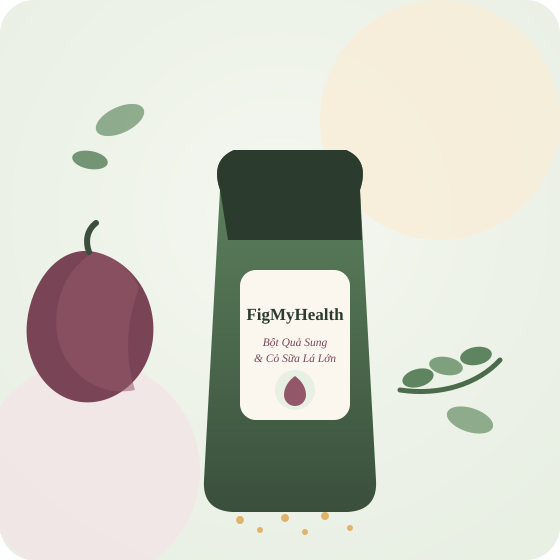
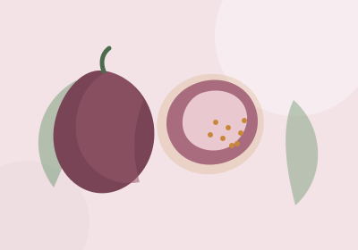
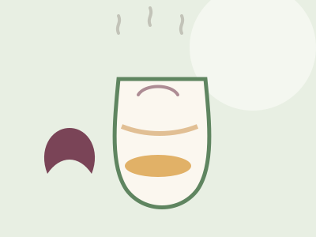
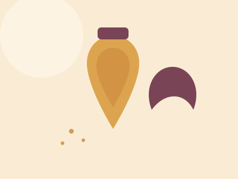
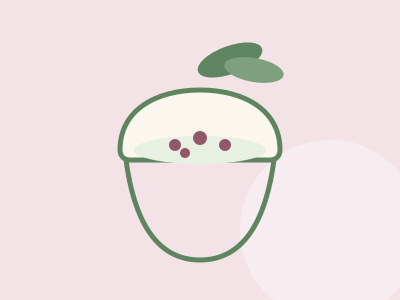

Bột Quả Sung & Cỏ Sữa Lá Lớn — Sấy Thăng Hoa Nguyên Chất Freeze-Dried Fig & Euphorbia Hirta Powder — Pure & Simple 冻干无花果 & 大飞扬草粉 — 纯净天然
Chúng tôi hái sung nếp và cỏ sữa lá lớn khi còn tươi nhất, sấy thăng hoa ở nhiệt độ thấp để giữ trọn chất xơ và dưỡng chất tự nhiên — không đường, không chất bảo quản, không pha trộn tinh bột độn. We harvest fresh figs and Euphorbia hirta leaves at their peak, then freeze-dry them at low temperature to preserve natural fibre and nutrients — no added sugar, no preservatives, no filler starch. 我们在无花果和大飞扬草最新鲜的时候采摘，以低温冻干工艺最大程度保留天然膳食纤维与营养成分——不加糖、不含防腐剂、不掺杂淀粉。
- Giao hàng toàn quốcNationwide delivery全国配送
- Tư vấn tận tâm, không vội vàngUnhurried, honest advice用心咨询，不催单
- Nguyên liệu rõ nguồn gốcTraceable ingredients原料可追溯

Sản Phẩm Này Dành Cho Ai?Is This Right For You?这款产品适合谁？
Nếu bạn thấy mình trong những điều dưới đây, có lẽ đây là lúc để thử.If any of this sounds like you, it might be time to give it a try.如果以下描述有一条说的是你，也许现在就是尝试的好时机。
Bận rộn, ăn uống thất thườngBusy, irregular meals工作繁忙、饮食不规律
Công việc cuốn đi, bữa ăn qua loa, rau củ ít dần. Một thìa bột mỗi sáng giúp bạn bổ sung thêm chất xơ tự nhiên mà không cần cầu kỳ. Work keeps you busy and meals get rushed, with fewer vegetables each week. One spoonful in the morning adds natural fibre back in, with zero effort. 工作繁忙，三餐将就，蔬菜摄入越来越少。每天早上一勺，轻松补充天然膳食纤维，无需额外费心。
Quan tâm sức khỏe đường ruộtCaring for gut health关注肠道健康
Bạn muốn chăm sóc hệ tiêu hóa theo cách nhẹ nhàng, tự nhiên, không vội vàng tìm đến thuốc cho mọi khó chịu nhỏ. You want to support digestion gently and naturally, without reaching for medicine over every small discomfort. 希望以温和天然的方式呵护肠胃，而不是稍有不适就依赖药物。
Yêu lối sống mộc mạc, eat-cleanLoves clean, wholesome living喜欢简朴、天然的生活方式
Bạn thích những nguyên liệu nguyên bản, sấy lạnh giữ trọn bản chất, không phẩm màu không hương liệu, để thêm vào sinh tố, sữa chua, cháo yến mạch mỗi ngày. You love real ingredients, freeze-dried to keep their true character — no colouring, no flavouring — perfect stirred into smoothies, yogurt or oatmeal. 喜欢真材实料、冻干锁鲜、不加色素香精的食材，日常加入奶昔、酸奶或燕麦粥中一起享用。

Bột Quả Sung & Cỏ Sữa Lá Lớn Là Gì?What Is This Powder, Exactly?这款粉末究竟是什么？
Đây là bột mịn làm từ hai nguyên liệu quen thuộc của làng quê Việt Nam: quả sung nếp chín tới và cỏ sữa lá lớn — phối trộn theo tỷ lệ được cân nhắc kỹ, rồi sấy thăng hoa (freeze-dry) ở nhiệt độ rất thấp để giữ lại tối đa chất xơ, khoáng chất và các hợp chất tự nhiên vốn có trong nguyên liệu tươi. A fine powder made from two familiar Vietnamese countryside ingredients: ripe figs and Euphorbia hirta leaves — blended in a carefully considered ratio, then freeze-dried at very low temperature to retain as much of the original fibre, minerals and natural compounds as possible. 这是一款由两种越南乡村常见原料制成的细粉：成熟无花果与大飞扬草叶，按精心配比混合后，以极低温冻干工艺处理，最大程度保留新鲜原料中的膳食纤维、矿物质与天然成分。
Không giống bột sấy nhiệt thông thường phải phơi hoặc sấy ở nhiệt độ cao dễ làm mất chất, sấy thăng hoa tách nước ra khỏi nguyên liệu bằng cách thăng hoa đá ở áp suất thấp, gần như giữ nguyên hình dáng, màu sắc và dưỡng chất ban đầu. Unlike conventional heat-drying, which can degrade nutrients under high heat, freeze-drying removes water through sublimation under low pressure — keeping the shape, colour and nutrients remarkably close to the fresh original. 与容易造成营养流失的传统高温烘干不同，冻干工艺是在低压下通过升华去除水分，最大限度保留原料原有的形态、色泽与营养。
Chúng tôi làm sản phẩm này trước tiên vì muốn có một thứ sạch, tử tế để gia đình mình dùng mỗi ngày — sau đó mới nghĩ đến việc chia sẻ nó cho những gia đình khác. Không có công thức bí truyền màu mè, chỉ có sự kỹ lưỡng trong từng khâu, từ chọn quả đến đóng gói. We first made this for our own family — something clean and honest to use every day — before thinking about sharing it with others. There is no secret formula, just care at every step, from picking the fruit to sealing the bag. 最初，我们只是想为自己家人做一份干净、真实、可以天天食用的食品，之后才想到与更多家庭分享。没有花哨的秘方，只有从选果到封装每一个环节的用心。
Hai Nguyên Liệu ChínhTwo Core Ingredients两大核心原料

Quả SungFig无花果
Ficus carica L.Quả sung từ lâu là món ăn dân dã quen thuộc trong bữa cơm và bài thuốc dân gian của người Việt. Theo dữ liệu USDA, sung khô là nguồn chất xơ và kali đáng kể — trung bình khoảng 9-10g chất xơ và gần 680mg kali trên 100g. Quả sung còn chứa nhiều polyphenol, flavonoid (như quercetin, rutin) có hoạt tính chống oxy hóa, được ghi nhận trong các nghiên cứu hóa thực vật gần đây.[1][2] Figs have long been a humble, familiar food and folk remedy in Vietnamese households. According to USDA data, dried figs are a notable source of fibre and potassium — roughly 9–10g fibre and nearly 680mg potassium per 100g. Figs also contain polyphenols and flavonoids (such as quercetin and rutin) with antioxidant activity, documented in recent phytochemical studies.[1][2] 无花果自古以来就是越南百姓餐桌上常见的食材，也是民间常用的食疗方。根据美国农业部（USDA）数据，干无花果每100克约含9-10克膳食纤维和近680毫克钾，是不错的膳食纤维与钾来源。近期植物化学研究还发现无花果含有槲皮素、芦丁等多酚黄酮类抗氧化成分。[1][2]

Cỏ Sữa Lá LớnEuphorbia Hirta大飞扬草
Euphorbia hirta L.Cỏ sữa lá lớn là cây thuốc nam quen thuộc, mọc phổ biến ở các vùng quê Việt Nam, được y học cổ truyền dùng từ lâu để hỗ trợ điều hòa tiêu hóa. Một nghiên cứu trên BMC Complementary Medicine and Therapies (2019) cho thấy dịch chiết cây này tác động lên nhu động ruột qua cơ chế đối kháng canxi và cholinergic trên mô hình thực nghiệm, phần nào lý giải cách dùng dân gian cho cả tiêu chảy lẫn táo bón.[3] Chúng tôi dùng phần lá và thân được thu hái, rửa sạch và sấy khô cẩn thận trước khi phối trộn. Euphorbia hirta is a familiar Vietnamese folk herb, traditionally used to help regulate digestion. A 2019 study in BMC Complementary Medicine and Therapies found that extracts of this plant act on gut motility through calcium-antagonist and cholinergic mechanisms in experimental models, offering a possible explanation for its traditional use in both diarrhoea and constipation.[3] We use the leaves and stems, harvested, washed and carefully dried before blending. 大飞扬草是越南乡间常见的民间草药，长期以来被传统医学用于辅助调理肠胃。2019年发表于BMC Complementary Medicine and Therapies的一项研究发现，该植物提取物通过钙拮抗与胆碱能机制作用于肠道蠕动，这也部分解释了民间为何将其用于腹泻与便秘两种情况。[3] 我们选用采摘、洗净并小心烘干后的茎叶部分进行拼配。
* Đây là thực phẩm bổ sung, không phải là thuốc và không có tác dụng thay thế thuốc chữa bệnh. Các nghiên cứu trích dẫn là nghiên cứu khoa học độc lập về thành phần, không phải nghiên cứu lâm sàng riêng cho sản phẩm FigMyHealth. * This is a food supplement, not a medicine, and is not intended to diagnose, treat, cure or prevent any disease. The studies cited are independent research on the raw ingredients, not clinical trials on the FigMyHealth product itself. * 本产品为膳食补充食品，并非药品，不能替代药物治疗疾病。以上引用研究为针对原料成分的独立科学研究，并非针对 FigMyHealth 产品本身的临床试验。
Vì Sao FigMyHealth Ra Đời?Why FigMyHealth BeganFigMyHealth的初心
Chúng tôi lớn lên với những món ăn, bài thuốc dân gian của bà, của mẹ — nhưng nhịp sống hiện đại khiến việc tự sơ chế mỗi ngày ngày càng khó. FigMyHealth ra đời để rút ngắn khoảng cách đó. We grew up with the home remedies and folk foods our grandmothers and mothers made — but modern life leaves little time to prepare them daily. FigMyHealth exists to close that gap. 我们从小吃着外婆、妈妈亲手做的民间食疗长大——但现代生活的节奏让每天自己准备变得越来越难。FigMyHealth 的诞生，就是为了缩短这道差距。
Sức khỏe là trên hếtHealth comes first健康至上
Mục tiêu ban đầu và duy nhất của chúng tôi là mang thêm giá trị sức khỏe đến bữa ăn hằng ngày của mọi người — không phải chạy theo lời quảng cáo hoa mỹ. Our one starting goal is to add real health value to everyone's daily meals — not to chase flashy marketing claims. 我们最初也是唯一的目标，是为大家的日常饮食增添真正的健康价值——而不是追逐浮夸的宣传语。
Món dân gian, phiên bản tiện dụngFolk remedies, made convenient让民间食疗更省心
Nhiều nguyên liệu quý của y học cổ truyền vẫn còn đó, nhưng ít ai còn thời gian tự hái, tự sơ chế mỗi ngày. Chúng tôi làm phần việc đó thay bạn, giữ lại phần tinh túy trong một thìa bột dễ dùng. Many valuable traditional ingredients are still around, but few of us still have time to gather and prepare them daily. We do that work for you, keeping the essence in one easy spoonful. 许多珍贵的传统食材依然存在，但很少有人还有时间每天自己采摘、处理。我们替你完成这道工序，把精华留在一勺方便的粉末中。
An tâm hơn mua dược liệu rờiMore peace of mind than loose herbs比散装药材更安心
Nhiều người vẫn ngần ngại ghé tiệm thuốc nam vì khó kiểm tra nguồn gốc, vệ sinh. Chúng tôi đóng gói theo lô, có thể truy xuất, để bạn dùng mà không phải tự hỏi "liệu có sạch không". Many people still hesitate to buy loose herbs from traditional medicine stalls, unsure of their origin or hygiene. We package by batch, with traceability, so you don't have to wonder "is this clean?" 很多人仍对到传统药材店购买散装药材有顾虑，担心来源和卫生问题。我们按批次包装、可追溯来源，让你使用时不必再猜测"这样干净吗"。
Vì Sao Nên Bổ Sung Mỗi Ngày?Why Add This To Your Daily Routine?为什么值得每天补充？
Không lời hứa hoa mỹ — chỉ là những gì khoa học và kinh nghiệm dân gian đã ghi nhận về hai nguyên liệu này. No exaggerated promises — just what science and traditional experience have recorded about these two ingredients. 没有夸大的承诺——只呈现科学研究与民间经验对这两种原料的真实记录。
Chất xơ tự nhiênNatural fibre天然膳食纤维
Chất xơ từ quả sung hỗ trợ nhu động ruột hoạt động đều đặn hơn khi kết hợp cùng chế độ ăn cân bằng. Fibre from figs supports more regular bowel movement as part of a balanced diet. 无花果中的膳食纤维有助于在均衡饮食的基础上维持肠道蠕动规律。
[1]
Giàu kali & khoáng chấtRich in potassium富含钾及矿物质
Kali là khoáng chất cần thiết giúp cơ thể duy trì cân bằng điện giải, hỗ trợ hoạt động của tim mạch và cơ bắp. Potassium is an essential mineral that helps maintain electrolyte balance and supports heart and muscle function. 钾是人体必需矿物质，有助于维持电解质平衡，支持心脏与肌肉正常运作。
[1]
Chống oxy hóaAntioxidant activity抗氧化作用
Các hợp chất polyphenol, flavonoid trong quả sung có hoạt tính chống oxy hóa, giúp trung hòa gốc tự do. Polyphenols and flavonoids in figs have antioxidant activity that helps neutralise free radicals. 无花果中的多酚与黄酮类物质具有抗氧化活性，有助中和体内自由基。
[2]
Hỗ trợ tiêu hóaDigestive support辅助肠胃调理
Cỏ sữa lá lớn được dùng trong y học cổ truyền để hỗ trợ điều hòa tiêu hóa, cơ chế tác động đã bước đầu được nghiên cứu ghi nhận. Euphorbia hirta is used in traditional medicine to help regulate digestion, with early research documenting a possible mechanism. 大飞扬草在传统医学中用于辅助调理肠胃，其作用机制已有初步科学研究记录。
[3]
Nguồn tham khảo khoa họcScientific references科学参考资料
- USDA FoodData Central — Dried Figs, nutrient profile (fiber, potassium). fdc.nal.usda.gov
- Alzahrani, B. et al. (2024). "Recent insight on nutritional value, active phytochemicals, and health-enhancing characteristics of fig (Ficus carica)." Food Safety and Health, Wiley. Xem bài báo / View article
- "The use of Euphorbia hirta L. (Euphorbiaceae) in diarrhea and constipation involves calcium antagonism and cholinergic mechanisms." BMC Complementary Medicine and Therapies (2019). Xem bài báo / View article
- "The Impact of Freeze Drying on Bioactivity and Physical Properties of Food Products." Applied Sciences, MDPI (2024). Xem bài báo / View article
Đây là tài liệu khoa học công khai về thành phần và cơ chế tác động, mang tính tham khảo — không phải khẳng định công dụng điều trị bệnh của sản phẩm FigMyHealth. These are publicly available scientific references about the ingredients and their mechanisms, for information only — not a claim that the FigMyHealth product treats any disease. 以上为关于原料成分及作用机制的公开科学文献，仅供参考——并非声称 FigMyHealth 产品具有治疗疾病的功效。
Quy Trình Làm Ra Từng Hộp BộtHow Each Batch Is Made每一份产品的制作过程
Thu hái tận tayHand-picked手工采摘
Hái vào sáng sớm, chọn lứa vừa đủ độ, không dùng nguyên liệu héo hay sâu bệnh. Picked early morning, only at the right ripeness — no wilted or damaged material used. 清晨采摘，只选成熟适度的原料，绝不使用枯萎或有病害的部分。
Rửa sạch, sơ chế kỹWashed & prepped清洗预处理
Ngâm rửa nhiều lần, loại bỏ nhựa và tạp chất trước khi đưa vào sấy. Soaked and rinsed several times to remove sap and impurities before drying. 多次浸泡清洗，去除乳汁与杂质后再进行烘干。
Sấy thăng hoa nhiệt độ thấpLow-temp freeze-drying低温冻干
Cấp đông rồi sấy thăng hoa trong buồng chân không, giữ tối đa dưỡng chất so với sấy nhiệt thường.[4] Frozen, then freeze-dried in a vacuum chamber to retain far more nutrients than conventional heat-drying.[4] 先冷冻后在真空舱内冻干，相比传统高温烘干能保留更多营养成分。[4]
Nghiền mịn, đóng gói kínMilled & sealed研磨密封
Xay mịn và đóng gói theo từng mẻ nhỏ, hút chân không để giữ độ thơm lâu hơn. Milled fine and packed in small batches, vacuum-sealed to preserve freshness longer. 细磨后小批量真空封装，更好保持香气与新鲜度。
Chứng Nhận & Minh Bạch Nguồn GốcCertifications & Traceability资质认证与源头可追溯
Vì đây là thực phẩm bổ sung dùng hằng ngày, chúng tôi hiểu sự minh bạch quan trọng thế nào. Because this is a supplement you use every day, we know how much transparency matters. 因为这是每天都要食用的补充食品，我们深知透明公开的重要性。
Nguồn gốc rõ ràngClear origin来源清晰
Nguyên liệu thu mua trực tiếp, có ghi chép truy xuất theo từng lô sản xuất. Ingredients sourced directly, with traceability records kept for every production batch. 原料直接采购，每批生产均有可追溯记录。
Hồ sơ tự công bố sản phẩmProduct self-declaration产品自我声明备案
Đang trong quá trình hoàn thiện thủ tục theo quy định. Sẽ cập nhật hình ảnh giấy tờ ngay khi được cấp. Currently being finalised per local regulations. Documents will be posted here once issued. 相关手续正在办理中，取得证书后将第一时间在此更新。
Kiểm nghiệm an toàn thực phẩmFood safety testing食品安全检测
Đang thực hiện tại đơn vị được chỉ định. Kết quả sẽ được công bố công khai tại đây. Testing underway with a designated laboratory. Results will be published here. 正在指定机构进行检测，结果将在此公开发布。
Bài Viết Nổi BậtFeatured Articles热门文章
Kiến thức có trích dẫn khoa học, không thổi phồng công dụng. Hiện chỉ có bản tiếng Việt. Science-backed articles, currently in Vietnamese only. 有科学依据的知识文章，目前仅提供越南语版本。


Cách Dùng Đơn Giản Mỗi NgàySimple Ways To Use It Daily每日简单使用方式

1. Pha nước ấm1. Warm water1. 温水冲泡
Hòa 1-2 thìa cà phê (khoảng 8-10g) bột với 150-200ml nước ấm 50-60°C, khuấy đều, dùng trước bữa ăn khoảng 20-30 phút. Mix 1–2 teaspoons (about 8–10g) with 150–200ml warm water (50–60°C), stir well, and drink 20–30 minutes before a meal. 取1-2茶匙（约8-10克）粉末，用150-200毫升50-60°C温水冲泡搅匀，建议餐前20-30分钟饮用。

2. Kết hợp mật ong2. With honey2. 搭配蜂蜜
Thêm 1 thìa mật ong vào ly bột pha nước ấm để dễ uống hơn, đặc biệt phù hợp dùng vào buổi sáng. Add a spoonful of honey to your warm cup for an easier, gentler taste — especially nice in the morning. 在冲泡好的粉末中加入一勺蜂蜜，口感更顺滑，尤其适合早晨饮用。

3. Thêm vào món ăn3. Mixed into food3. 加入日常饮食
Rắc bột vào sữa chua, sinh tố, cháo yến mạch để đa dạng hoá cách dùng mỗi ngày. Sprinkle into yogurt, smoothies or oatmeal to mix things up during the week. 撒入酸奶、奶昔或燕麦粥中，让每日的搭配更加丰富。
⚠ Phụ nữ có thai, đang cho con bú, trẻ nhỏ dưới 2 tuổi hoặc người đang điều trị bệnh nên tham khảo ý kiến bác sĩ trước khi dùng. Ngưng dùng nếu có dấu hiệu bất thường. ⚠ If you are pregnant, breastfeeding, caring for a child under 2, or under medical treatment, please consult your doctor before use. Stop use if you notice any unusual reaction. ⚠ 孕妇、哺乳期妇女、2岁以下幼儿或正在接受治疗的人群，使用前请先咨询医生。如出现不适请立即停用。
Giá BánPricing价格
Giá minh bạch, không phụ phí ẩn.Transparent pricing, no hidden fees.价格透明，无隐藏费用。
Gói Dùng ThửTrial Pack试用装
- Đủ dùng khoảng 10-12 ngàyLasts about 10–12 days约可使用10-12天
- Đóng gói hút chân khôngVacuum-sealed packaging真空包装
- Kèm hướng dẫn sử dụng chi tiếtDetailed usage guide included附详细使用说明
Combo 2 Hộp2-Pack Combo双包组合
- Đủ dùng khoảng 20-24 ngàyLasts about 20–24 days约可使用20-24天
- Ưu tiên hỗ trợ vận chuyểnPriority shipping support优先配送支持
- Phù hợp dùng cho 2 người/gia đình nhỏGreat for two people or a small family适合两人或小家庭共同使用
* Giá áp dụng cho đơn hàng trong nước, đã bao gồm bao bì đóng gói. Phí vận chuyển tính theo khu vực, được xác nhận khi đặt hàng. Đơn hàng số lượng lớn/xuất khẩu vui lòng xem mục Đối Tác Quốc Tế bên dưới. * Prices apply to domestic orders and include packaging. Shipping fees vary by region and are confirmed at checkout. For bulk or export orders, see the Wholesale section below. * 以上价格适用于国内订单，已含包装费用。运费按地区计算，下单时确认。批量采购或出口订单请见下方"国际合作"栏目。
Đặt Hàng / Liên Hệ Tư VấnOrder / Get Advice下单/咨询
Bấm gọi, nhắn Zalo, hoặc điền form — chúng tôi phản hồi trong ngày. Call, message us on Zalo, or fill in the form — we reply the same day. 直接致电、Zalo留言或填写表单——我们当天回复。
Dành Cho Nhà Nhập Khẩu & Đối Tác Quốc TếWholesale & Export Partners国际批发与进口合作伙伴
Chúng tôi sẵn sàng hợp tác với nhà nhập khẩu, nhà phân phối quốc tế quan tâm đến nông sản thảo mộc sấy thăng hoa từ Việt Nam. Gửi thông tin công ty, quốc gia và số lượng dự kiến — đội ngũ sẽ phản hồi trong 1-2 ngày làm việc. We welcome importers and distributors interested in freeze-dried herbal products from Vietnam. Send us your company details, country and estimated quantity — our team replies within 1–2 business days. 我们欢迎对越南冻干草本产品感兴趣的进口商与经销商。请提供贵公司信息、所在国家及预计采购量，我们将在1-2个工作日内回复。
- Hỗ trợ gửi mẫu thử theo yêu cầuSample support available on request可根据需求提供样品
- Đóng gói theo tiêu chuẩn xuất khẩu, trao đổi OEM/private labelExport-ready packaging; OEM/private label discussion welcome出口标准包装，欢迎洽谈OEM/贴牌合作
- Cung cấp đầy đủ hồ sơ nguồn gốc, thành phần khi có yêu cầuFull origin and ingredient documentation provided on request可应要求提供完整原料与来源资料
WhatsApp/Zalo: +84 968 944 077 · Email: johnlin121017@gmail.com WhatsApp/Zalo: +84 968 944 077 · Email: johnlin121017@gmail.com WhatsApp/Zalo：+84 968 944 077 · 邮箱：johnlin121017@gmail.com
Câu Hỏi Thường GặpFrequently Asked Questions常见问题
Không. Đây là thực phẩm bổ sung, không phải là thuốc và không có tác dụng thay thế thuốc chữa bệnh. Sản phẩm hỗ trợ bổ sung chất xơ và dưỡng chất tự nhiên trong chế độ ăn hằng ngày. No. This is a food supplement, not a medicine, and it is not intended to replace medical treatment. It simply helps add natural fibre and nutrients to your everyday diet. 不是。本产品为膳食补充食品，并非药品，不能替代药物治疗。它只是帮助您在日常饮食中补充天然膳食纤维与营养素。
Vị chua ngọt nhẹ tự nhiên của sung hòa cùng chút hậu vị thảo mộc của cỏ sữa, không đắng gắt. Nhiều khách pha cùng mật ong hoặc cho vào sinh tố để dễ uống hơn. A gentle, naturally sweet-tart fig flavour with a mild herbal finish from the Euphorbia hirta — not bitter. Many customers add honey or blend it into smoothies. 带有无花果天然的微酸微甜，回味略带草本香气，不苦涩。很多顾客喜欢搭配蜂蜜或加入奶昔中饮用。
Bảo quản nơi khô ráo, thoáng mát, tránh ánh nắng trực tiếp, đậy kín sau mỗi lần dùng. Hạn sử dụng in trên bao bì, thường khoảng 12 tháng kể từ ngày sản xuất. Store in a cool, dry place away from direct sunlight, and reseal tightly after each use. The expiry date is printed on the packaging, typically around 12 months from production. 请存放于阴凉干燥处，避免阳光直射，每次使用后密封保存。保质期以包装上标注为准，一般为生产日期起约12个月。
Chúng tôi khuyên nên tham khảo ý kiến bác sĩ trước khi dùng cho trẻ nhỏ, phụ nữ mang thai/cho con bú hoặc người đang điều trị bệnh, để đảm bảo phù hợp với thể trạng riêng. We recommend consulting a doctor before use for young children, pregnant or breastfeeding women, or anyone under medical treatment, to make sure it suits their individual condition. 建议儿童、孕妇/哺乳期妇女或正在接受治疗的人群在使用前先咨询医生，以确保适合个人体质。
Sau khi xác nhận đơn, hàng thường được đóng gói và gửi đi trong 1-2 ngày làm việc. Thời gian nhận hàng tùy khu vực, đơn vị vận chuyển sẽ liên hệ trước khi giao. Once your order is confirmed, it's usually packed and shipped within 1–2 business days. Delivery time depends on your location; the courier will contact you before delivery. 订单确认后，通常在1-2个工作日内打包发出。具体到货时间视地区而定，快递员会在派送前与您联系。
Nếu sản phẩm bị lỗi do vận chuyển hoặc không đúng như mô tả, vui lòng liên hệ trong vòng 3 ngày kể từ khi nhận hàng để được hỗ trợ đổi trả. If your item arrives damaged or doesn't match its description, please contact us within 3 days of delivery for a return or exchange. 如商品因运输问题受损或与描述不符，请在收货后3天内联系我们办理退换货。
Sẵn Sàng Thử Một Thìa Bột Mỗi Sáng?Ready For One Spoonful Each Morning?准备好每天来一勺了吗？
Không cần thay đổi cả thói quen ăn uống — chỉ cần bắt đầu từ một điều nhỏ mỗi ngày. Chúng tôi ở đây để đồng hành cùng bạn. No need to change your whole diet — just start with one small habit each day. We're here to walk with you. 不必彻底改变饮食习惯——从每天一个小小的坚持开始就好。我们愿意陪伴您一起。